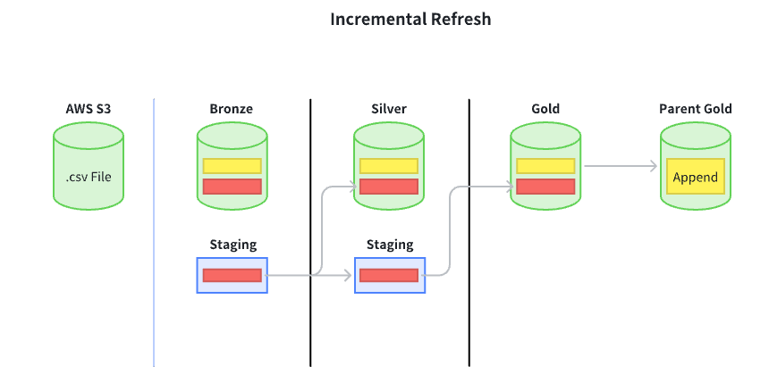

Data Engineer Project
Databricks Implementation
This project involves leveraging Databricks to process and analyze data efficiently. The workflow includes appending data from AWS S3 to Databricks, processing it using the medallion architecture and building insightful dashboards.
Raw data is stored in AWS S3 and serves as the input data source for the system. From S3, data is ingested into Databricks and processed using a Lakehouse architecture with Bronze, Silver and Gold layers. In the Bronze layer, raw data is ingested and stored for traceability. In the Silver layer, data is cleaned, standardized and transformed for analytical purposes. In the Gold layer, data is aggregated and optimized for business analysis.
The Gold data from the Child Company is then consolidated and loaded into the Gold Analytics table of the Parent Company. Finally, the curated data is exposed through the Serving Layer to build dashboards and analytical reports, supporting business decision making.
Designed an incremental refresh pipeline using the Bronze-Silver-Gold architecture, where new data from AWS S3 is processed layer by layer and only incremental changes are refreshed. This approach optimizes processing time, reduces computational cost and ensures the Gold layer is always ready for analytics and reporting.